DIY Cat Ears
Created an instructional video to teach people how to make their own light-up cat ear headband - the entire process from CAD to 3D printing to assembly, electronics, and decorating.
Overview
This page is still a work in progress.
Version 2.0
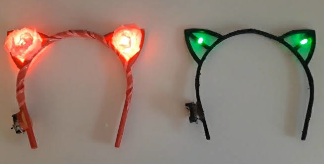
Green LED with Black Frame Version
Created: September 2020
 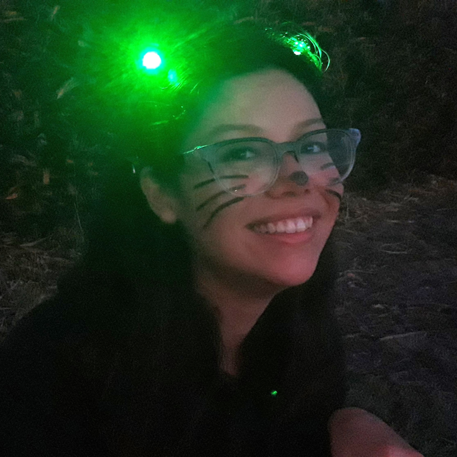
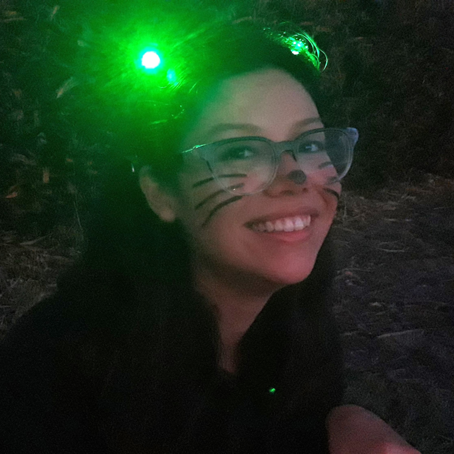
Red LED with Pink Frame and Flowers Version
Created: October 2020
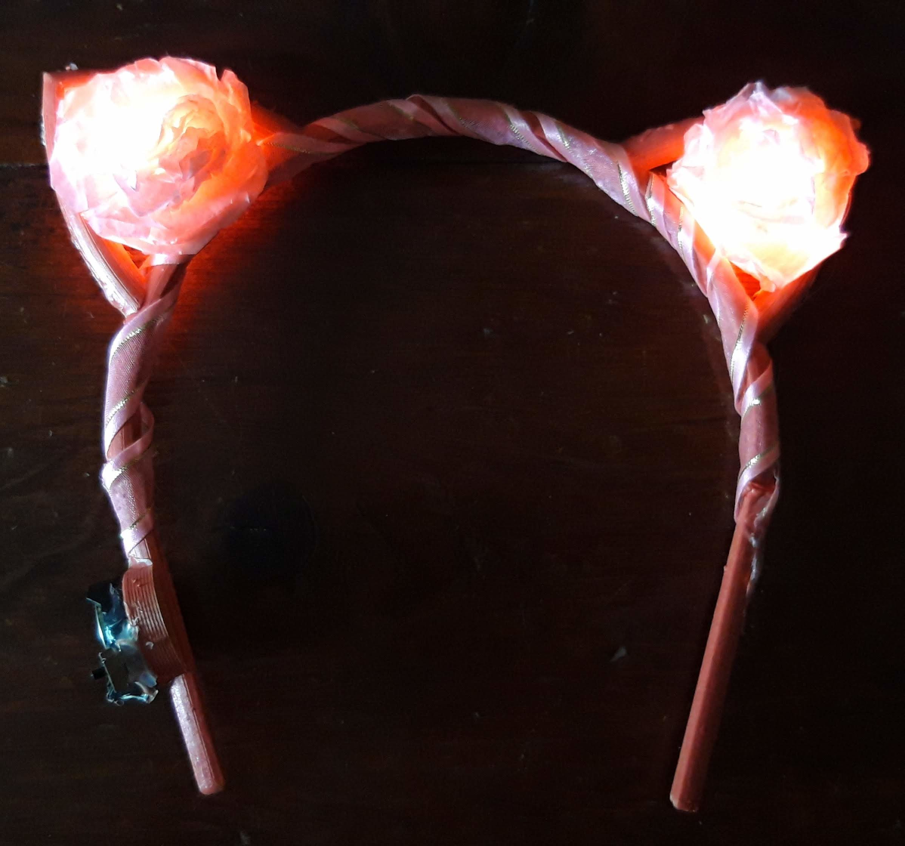
 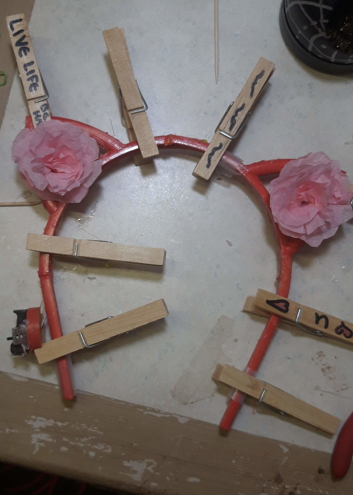
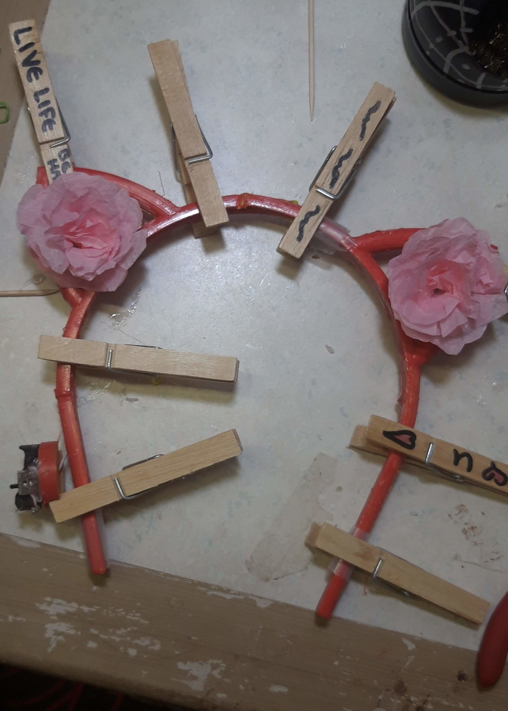
Version 1.0
Created: January 28, 2017
So if I remember correctly, after all these years, the story goes like this. One night when I was a Junior in high school, I had a lot on my mind and I couldn’t sleep, so I pulled an all-nighter and made myself a pair of light-up cat ears. Then I posted about it to Instagram.
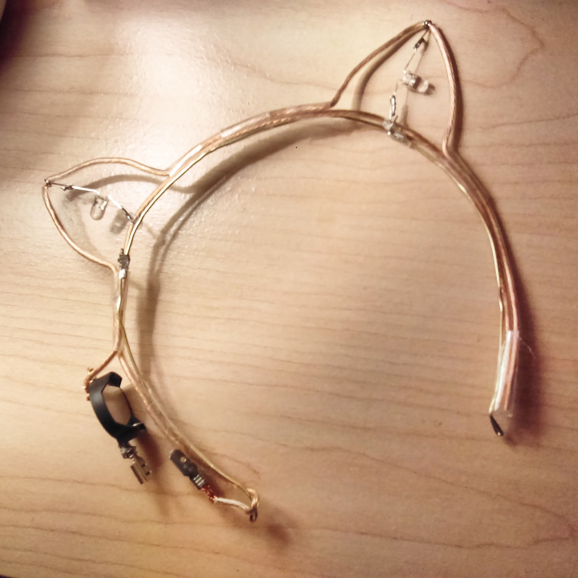
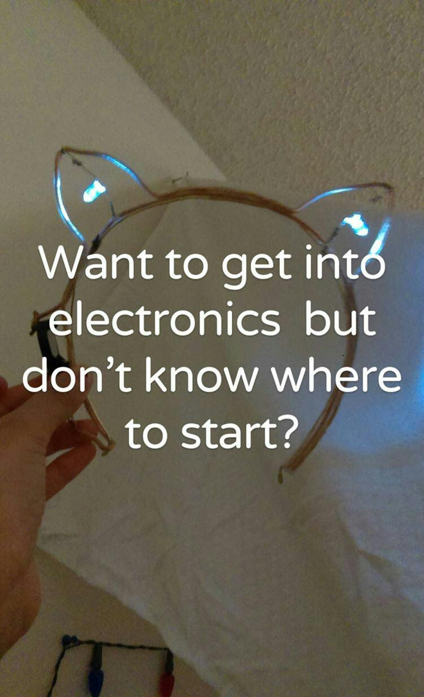
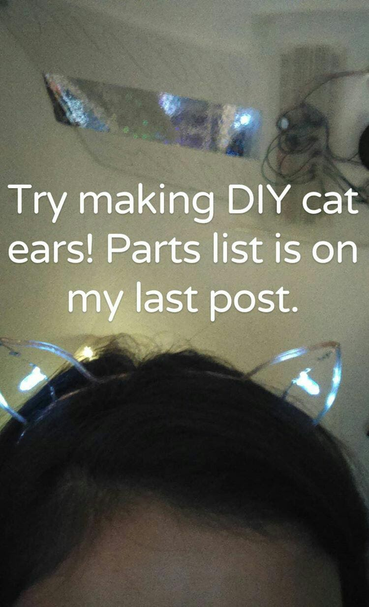
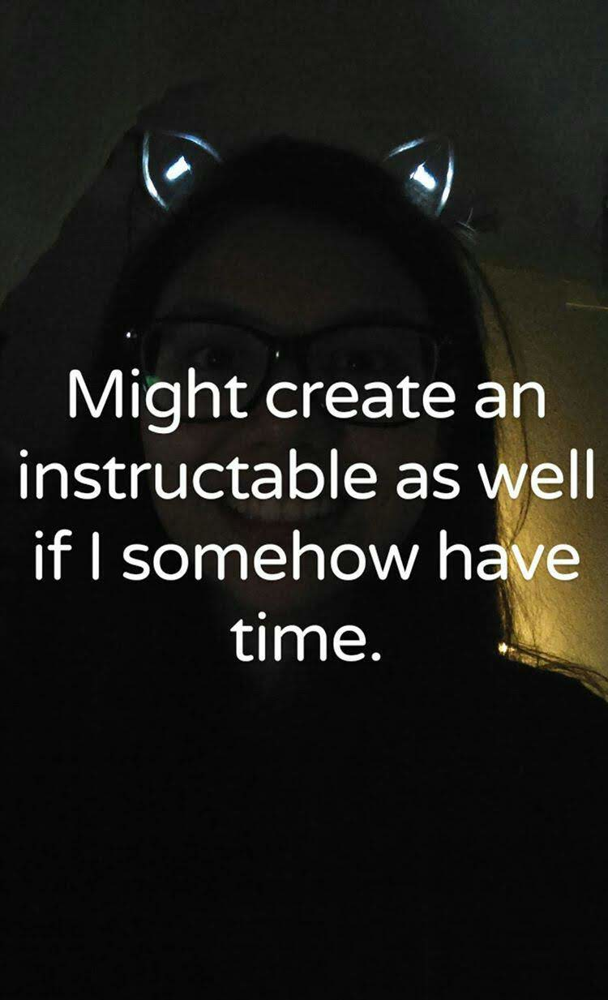
I did put the parts list on my Instagram, but never got around to making the Instructable.
Cat Ears V1.0 was my absolute favorite accessory as a teenager! I would wear the headband everywhere - to school, to the supermarket, on the bus, on dates, literally everywhere. Especially on days when I needed extra confidence (such as for a Calculus quiz), or for parties/holidays like Mardi Gras. I even wore them some days when I was up at the front of the room teaching the CodeKCS class in Senior Year.
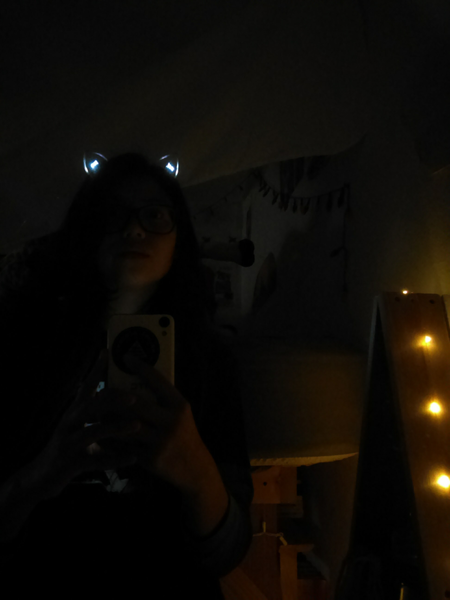
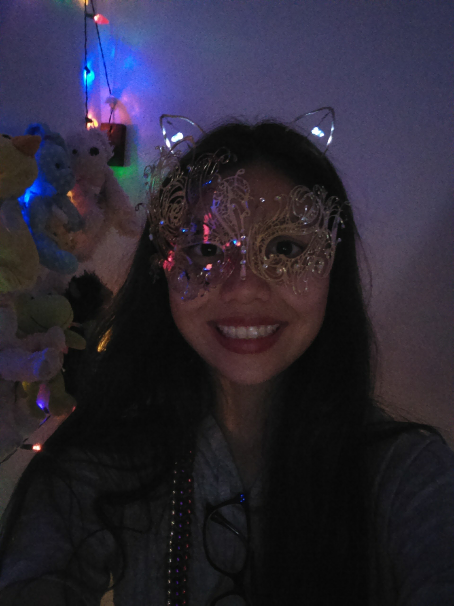
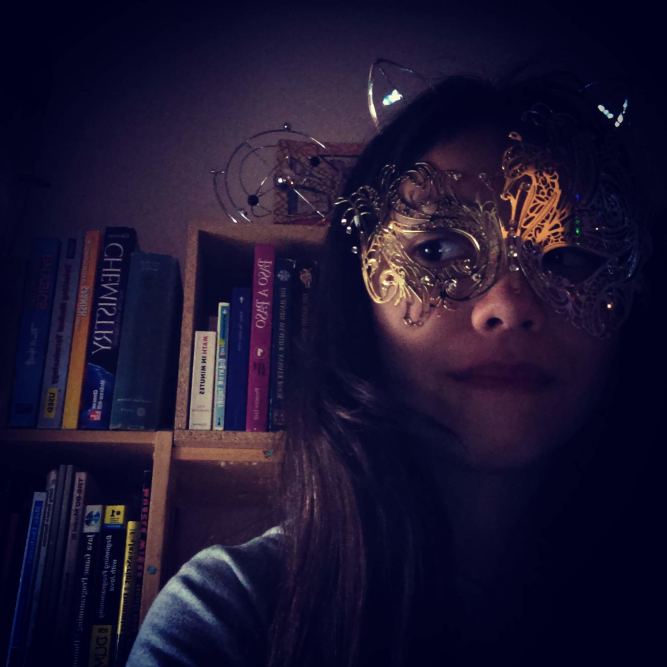
From left to right: Wearing my cat ears in my cozy bedroom; Wearing my cat ears as a good luck charm before a quiz; Wearing cat ears on Mardi Gras at home (last two images).

I was sixteen years old when I made these ears. I was - and still am - absolutely obsessed with cats.
The cat shown in the video was our beloved cat Rumba.
Rumba, you are so very loved and so very missed. 
You were the light in my life amid so much darkness, and the reason why I am still here today.